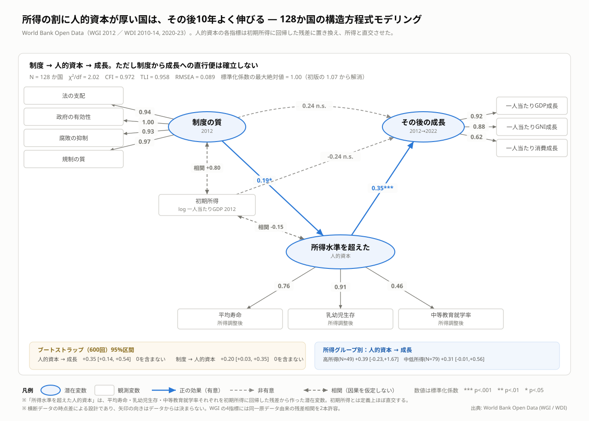
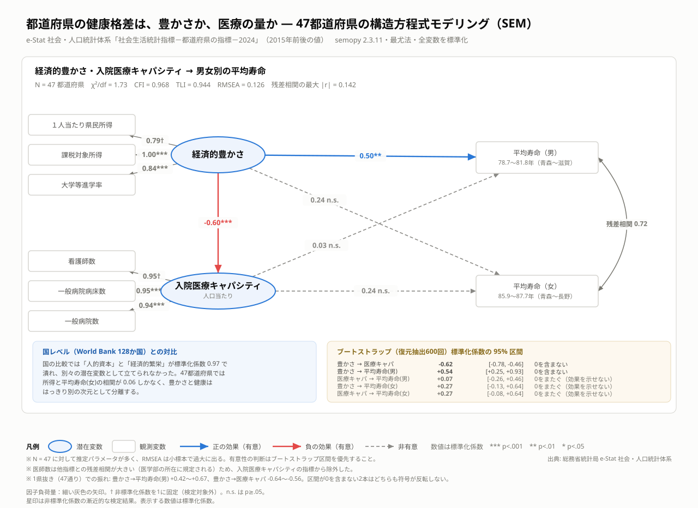
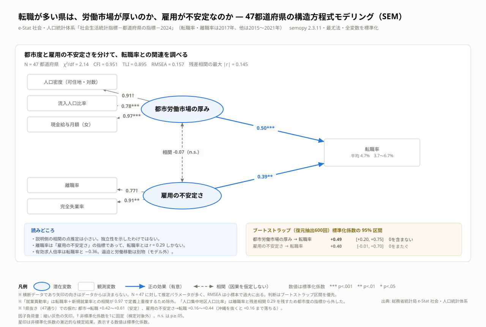
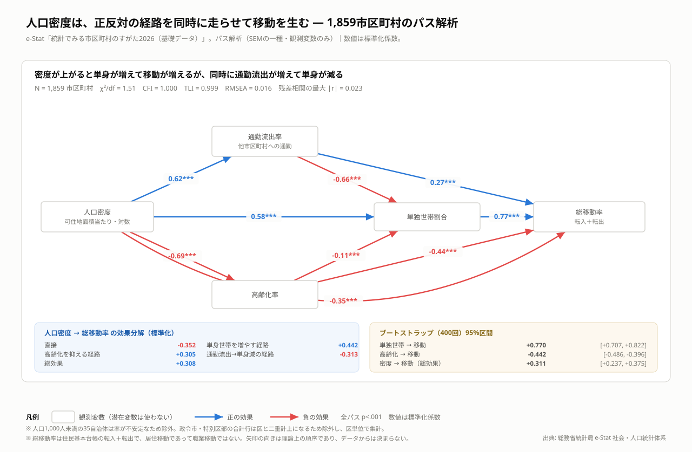

国と地域の「なぜ？」を公的データで探る
構造方程式モデリング（SEM）による探索的分析
豊かさ・健康・人の移動は、どう関係する？
World Bank と e-Stat の公開データを用いた、国・都道府県・市区町村の4つの分析。気になる図から詳細に進めます。
観測データから関係を調べたもので、因果関係を証明する分析ではありません。
このプロジェクトについて
公開データを使い、経済・健康・労働・人口移動の関係を、国・都道府県・市区町村の単位で調べるプロジェクトです。 構造方程式モデリング（SEM）を中心に、複数の関係を同時に捉えます。
問いを立て、データを確認し、モデルを推定したうえで、不確実性や特定の地域への依存を検証します。 分析がうまく成立しなかった試行や、見直した解釈も残し、コードと結果を公開しています。
AIとの対話を通じて分析を進め、コード・図・説明文の作成や改善にもAIを活用しています。 AIが生成した説明をそのまま結論とせず、データや検証結果に照らして見直す方針です。
01 · N = 128
国レベル — 所得の割に人的資本が厚い国は、その後10年よく伸びる

所得水準から期待される以上に人的資本が充実した国ほど、その後の成長率が高いという関連が見られました。
詳しく見る →02 · N = 47
都道府県の健康 — 豊かさと寿命の関連を男女別に比較

地域の豊かさ・医療供給量・平均寿命の関係を、男女別に分析しました。
詳しく見る →03 · N = 47
都道府県の転職 — 都市度と雇用の不安定さという2つの側面

都市労働市場の厚みと雇用の不安定さという、2つの側面から転職率を分析しました。
詳しく見る →04 · N = 1,859
市区町村 — 密度は正反対の経路を同時に走らせる

人口密度と居住移動の関係を、単身世帯・高齢化・通勤を通じた経路に分解しました。
詳しく見る →データ・コード・再現方法
分析を再現する
Python 3.13 が必要（3.14 には semopy の wheel が無い）。
make setup && make all で全分析と全図が約50秒で再生成される。
data/raw/ に生データをコミットしてあるためネットワークは不要。